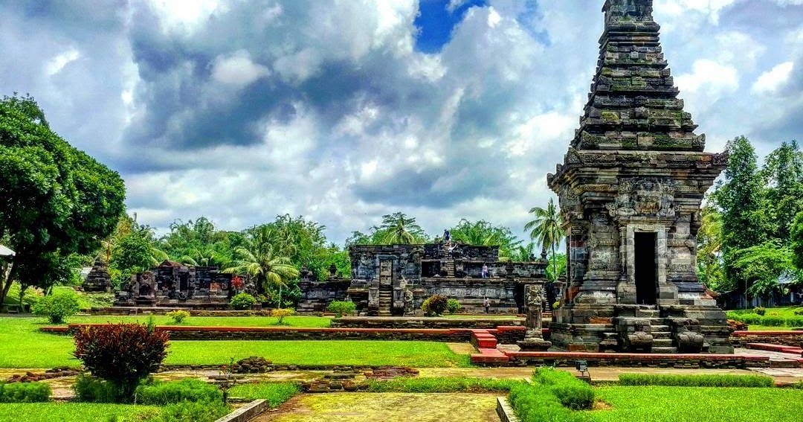
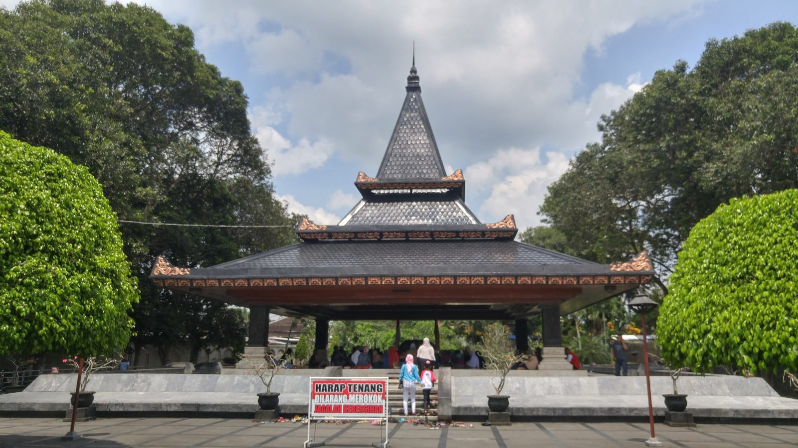
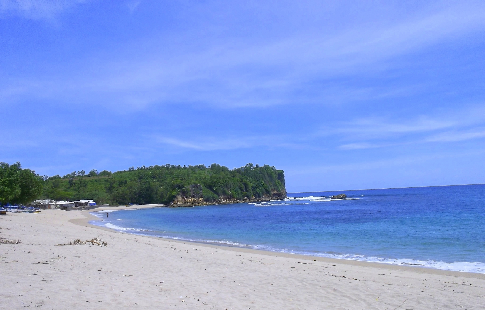
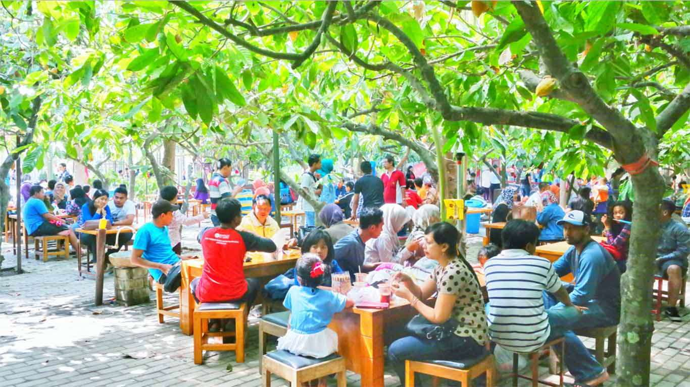
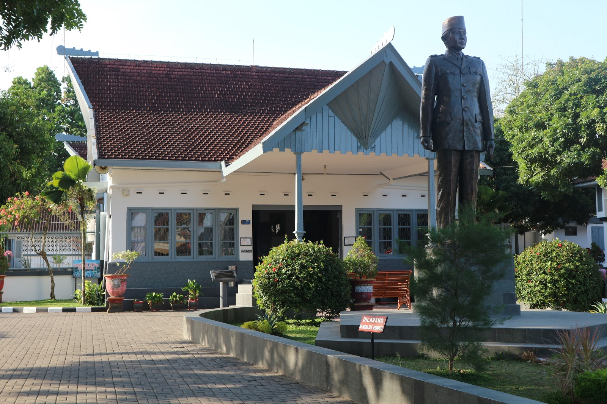

Penataran Temple
Penataran or Panataran (Candi Penataran) is one of the largest Hindu temple ruins complex in East Java, Indonesia. It is located roughly 12 km northeast of Blitar, with the closest airport being farther away at Malang. Believed to have been constructed between the 12th century to the 15th century, the temple played a significant role in the Majapahit Kingdom, especially under King Hayam Wuruk.
Tomb of Soekarno
Tomb of Soekarno (Makam Bung Karno) is the grave of Sukarno, Indonesia's first president, in Blitar, East Java. Initially an ordinary grave where he was buried shortly after his death, a mausoleum was constructed in the late 1970s and the site evolved into a political and religious pilgrimage site, receiving hundreds of thousands of visitors annually.
Tambakrejo Beach
Tambakrejo beach is one of southern beaches in Blitar. Among those beautiful beaches, Tambakrejo Beach becomes one of the best choices of tourist destination. As the name suggests, it is located in Tambakrejo Village. As for the region, it belongs to Wonotirto Sub-District.
Chocolate Village
Chocolate village (Kampung Coklat) is located at Kademangan village. It is 5 km from Blitar city center. It can reached only by using private vehicle or bike taxi. The location covers around 20000 m sq. It consists of chocolate trees, plantation and factory. You can see how chocolate trees are planted, grown and produced to be perfect fine chocolate products. They are chocolate itself as main product, candy, noodle, milk and etc. It is worth if you love chocolate. Use GPS to find location in Google map with keyword " Kampung Coklat", Kademangan.